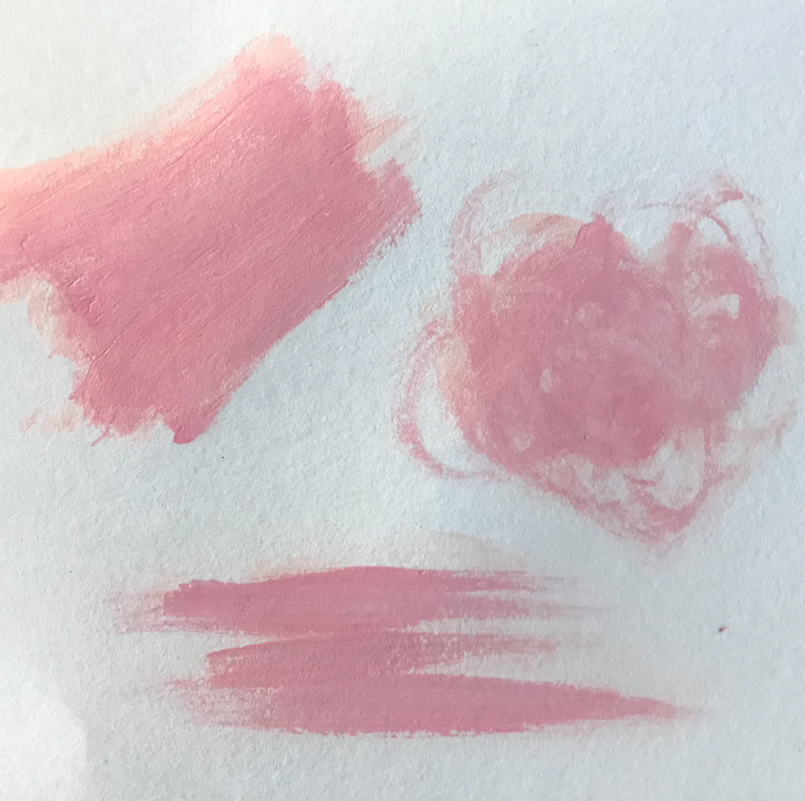
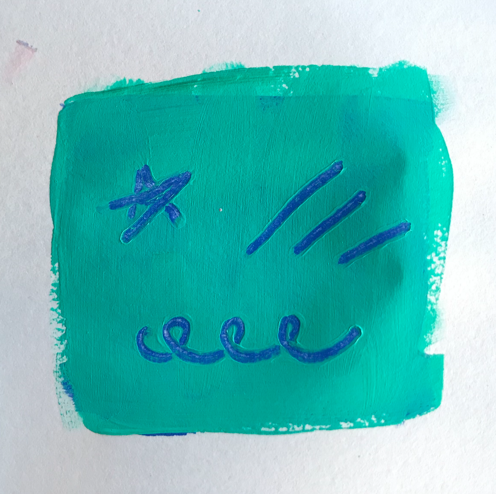
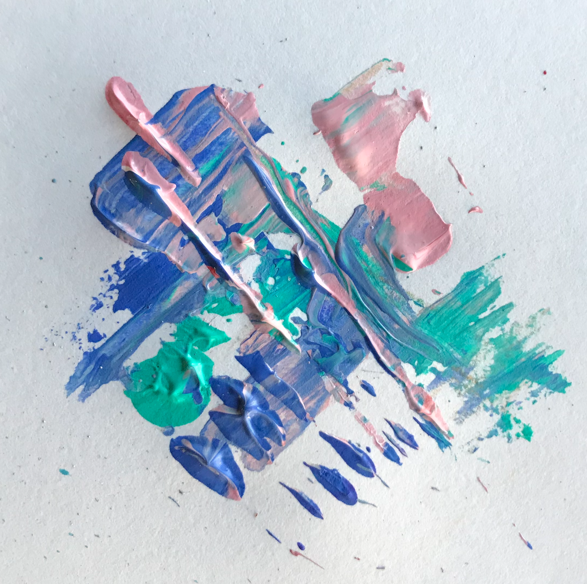
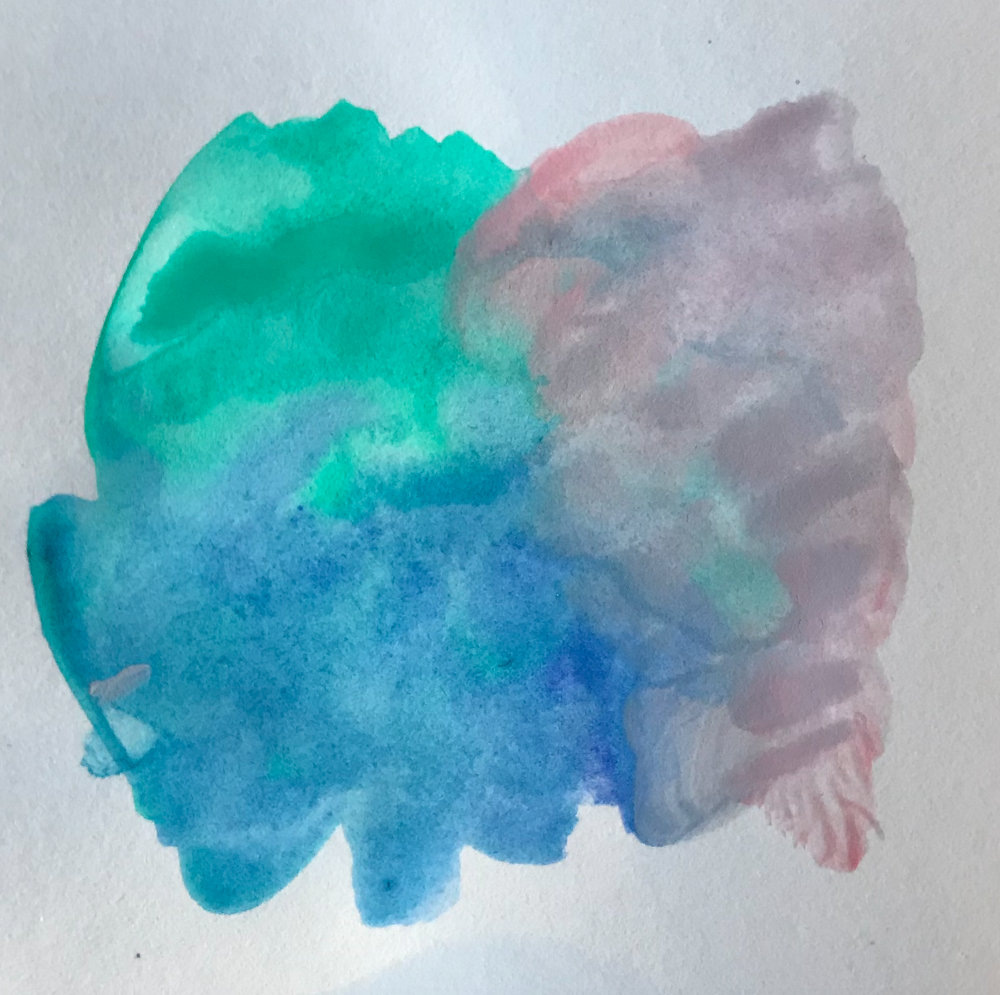
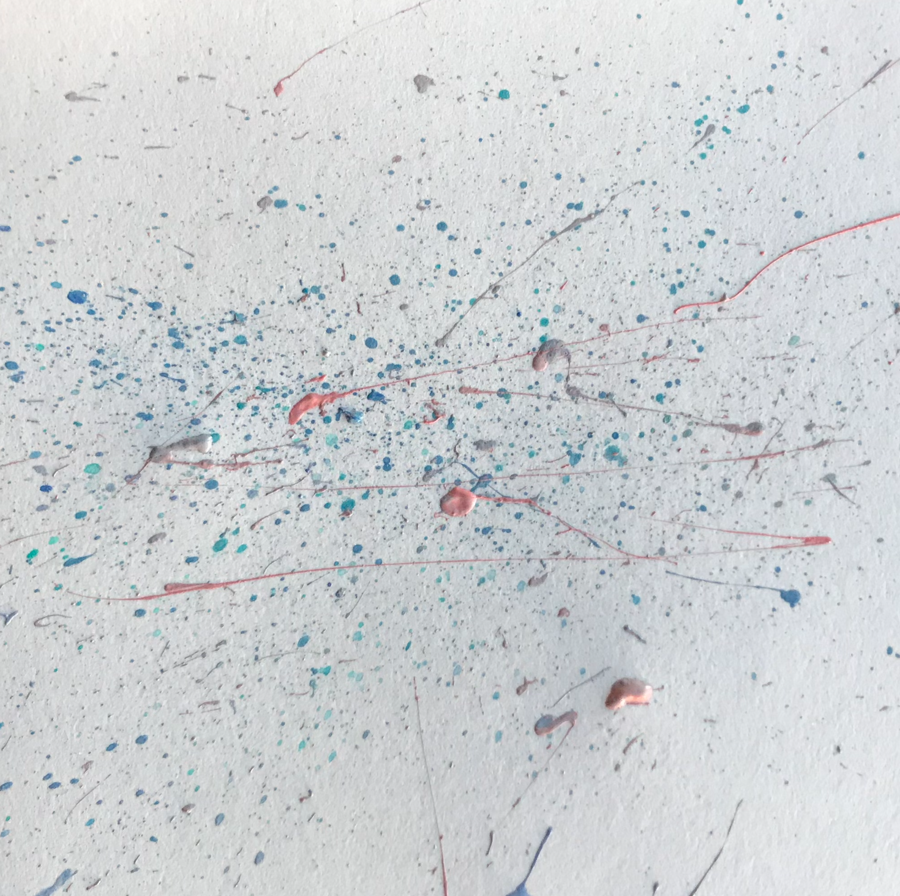
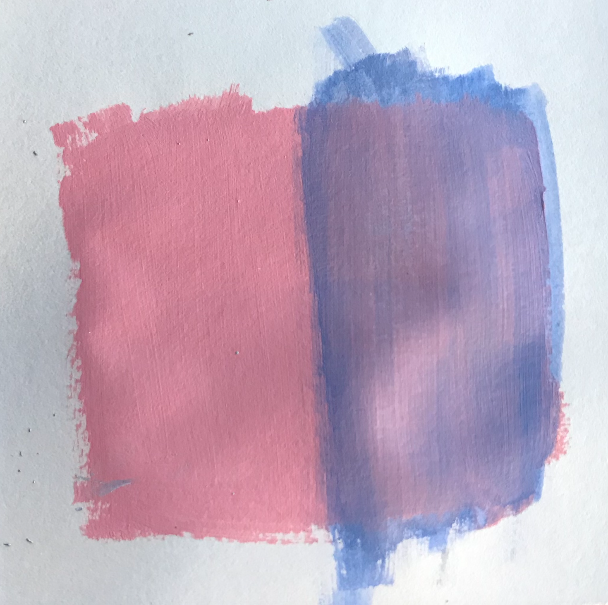
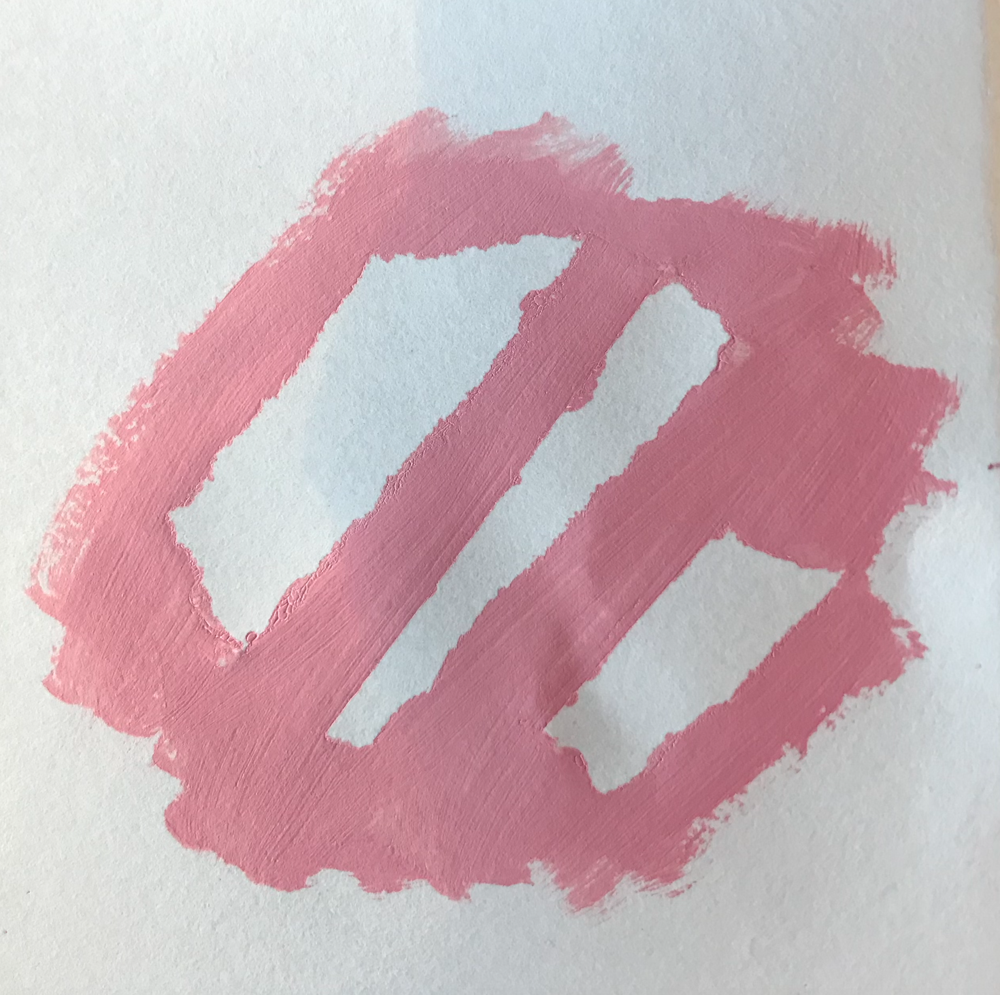

TECHNIQUES
Below are a handful of useful acrylic painting techniques to create various textures and effects in you paintings. Try them out or create your own!

Dry Brush
Use your brush without water to create soft fuzzy shapes.

Scumbling
Apply a layer of wet paint over dry paint then scrape away shapes with the end of your brush.

Impasto
Apply paint directly onto canvas with palette knife to create interesting textures.

Wet on Wet
Add water to thin the paint and achieve a watercolor effect.

Splatter
Use a toothbrush to create splatters.

Layer
Mix different colors of paint directly on canvas.

Glazing
Brush over dry paint with watered down paint to mute or brighten the color.

Masking Tape
Paint over masking tape to preserve white spaces.